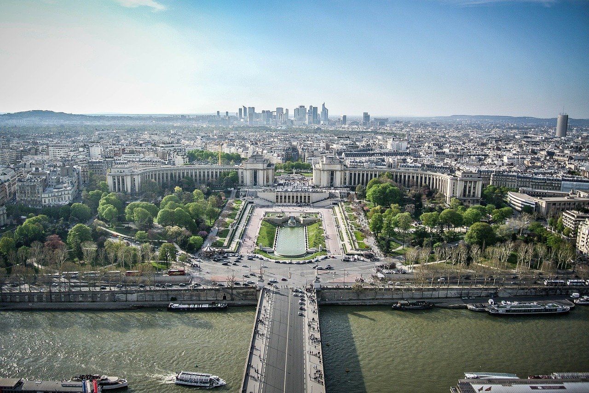
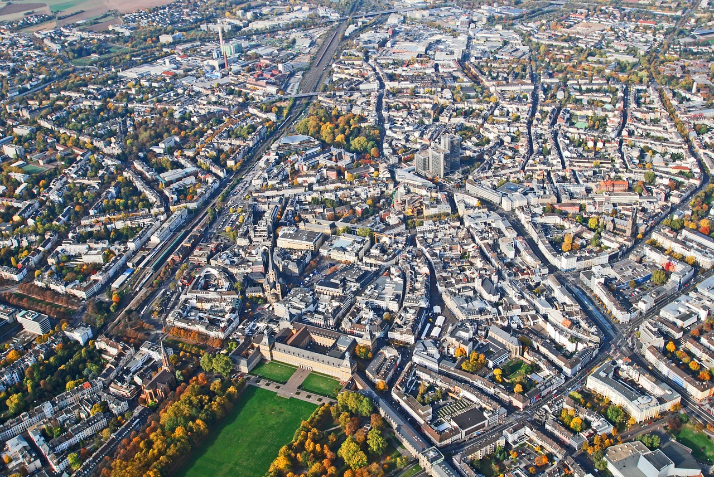

Networked Humanity: How Do We Know What is Right or Wrong?
In The Anatomy of Inequality, author Per Molander describes one of the ways conservatives defend the status quo, a tactic called knowledge skepticism. By saying we can’t know a thing for certain, over the years conservatism has attempted to undermine egalitarian theories from advancing an alternative to the status quo. In human history, the status quo has been conditions of great inequality—an exception being the period after World War II to the 70s and on to present day in the Nordic countries. But in the United States, beginning in the early 70s with the Powell Memo, a concerted campaign by the right has been advanced to dismantle the social welfare state and, asserting the small government rhetoric now familiar to us, has succeeded in cementing rule by wealthy and corporate interests effectively crafting policy for their benefit without regard to the public.
A recent application of knowledge skepticism has been to create doubt in commonly understood science—probably the most extreme case is denying the Holocaust. Obviously knowledge skepticism is applied selectively in conservative rhetoric. When it is convenient to defend one’s interests with absolute certainty in the knowledge that one is right, conservatives can be unequivocal. Moral relativism is another way to defend the status quo, and Molander mentions its use as a bulwark against Enlightenment thinkers asserting the natural rights of all human beings.
The inability of humanity to take a valid course of right action could suggest there is an awareness of right action that people have no access to—due to self-interest or eternal ignorance—or that no right action exists for the world because humanity embodies natural forces that we have no ability to direct. Biological drives, instincts, and desires take their expression through humanity. And seen this way, we are expressions of a force of nature that is beyond our control. There is no right or wrong way about it: we are a force of nature. But Western Civilization is nothing if not an attempt to subdue nature, to have dominion over nature, and so long as civilization exists it will attempt to control human nature.
No one likes to be controlled. We want to be free. But we live within a society of laws and customs and so already our freedom is not without direction or control. Consider a society where all decisions are made to achieve the optimum conditions for all life on earth—not just humans, but for every living being from the smallest to the largest. To negotiate in the interest of all life is not without conflict. Peace is not the end of striving and struggle and conflict, it is only to say that all of the major decisions between peoples are negotiated without violence. Imagine how a world at peace would function. We don’t spend much time conceiving of this. It is rather a phrase for holidays, for mythical times. Is humanity able to imagine how a world at peace would function?
Doing what is right, as a society, assumes 1.) the ability to know what is right for humanity 2.) the ability for all of humanity to act in accord with what is right. But right for who? When talking about the future of life, first we must identify what life we are talking about. Are we talking about people in developed countries, or all humans, and what of the other animals, polar bears, whales, bumble bees?
Each animal species has their own form of consciousness. While they may not have recursive awareness, consciousness of consciousness etc, even a dog is conscious. Now does that animal know right or wrong? This question will bring us further along in discovering how humanity determines right or wrong: it is memory, and that memory is inscribed into a collective memory through stories, customs, and laws. Humans are not born knowing what is right. It is through action, whether upon impulse or belief, and on reflection, in memory of the act and its consequences for their conscience or society: the act is determined to be right or wrong.
And so when talking about what is right, it’s necessary to identify the unspoken values and clarify who the action is right for. When considering the future, it also helps to clarify how the future has been framed. A future of technology, or of humans? Or rather, the future of a complex interconnected system in which all depend: life on earth. All life, so that would be every species from the birds on down to soil micro-organisms. You can’t have a human brain without the entire ecosystem needed to sustain the body.
Given that I’m asking what is right for all life on earth, I can say that war is wrong, a wrong way to end conflict or to negotiate anything. Is warfare the default state of our civilization? Is it the only possible reality for humanity? But what if we’re wrong? Now with so many billion human beings on earth it is no longer an individual’s memory, or even the cultural stories that determine what is right or wrong, but the aggregate of all actions that determine whether the individual act is good or bad. It’s statistical, we refer to “justice for all” in numbers now, We are the 99%. That’s a bestseller of data storytelling. And 350, that’s not a number, it’s a movement: people have organized under that name (regrettably we’re now past 400 parts per million carbon dioxide particles in the atmosphere). During the Industrial Revolution the smoke stacks created pollution over factory and town, the smoke was noxious, that was known by people. But the smoke wasn’t wrong, yet. Right and wrong would be determined through a contest of wills, by who stood to benefit and who to suffer. Now, it is not one smoke stack that has produced all of our carbon dioxide emissions, it is in aggregate that burning fossil fuels throughout time accumulates carbon dioxide in our atmosphere and it is known more by statistics and numbers. But can society be governed by statistics? Or are those numbers only used to confirm or to deny the decisions made by people?
For the first time in history we are able to collect data on global inequality. It is a myth that we can’t track global capital flows. It’s by design that we are unable to track global capital as it squirrels itself through a tax loophole into some offshore account. The natural world is not a human thing but our economy is, it obeys human laws. The nature of the law and its enforcement is a reflection of power. It is an instrument of power. In the interests of wealth, we have become subjects to a neoliberal economy whose purpose can be understood by the results, the accumulation and concentration of wealth. This undermines civil society by making the people elected to high office responsive to wealth rather than their constituents. Without a functioning democracy our society is unable to access or express a shared understanding of what is right and wrong. Through misinformation and misdirection, the beliefs and values that reinforce economic inequality become status quo for everyday citizens.
Digital culture offers tools for humanity to access its shared knowledge and realize the potential for collective decision-making. For our society to embody what people commonly understand to be right and wrong, people must have access to information and the ability to participate in democracy. Among various platforms for strengthening democracy, the Five Star Movement and Decide Madrid are exemplary. No country is perfect, but Spain is a multi-party parliamentary democracy. And so is Italy. This allows for creative ideas to enter the debate, and be implemented.
What if government wasn’t an instrument of oppression and extraction, but one of support and regeneration? This is possible through multi-party parliamentary democracy and evidence-based public policy. Government that trusts people are smart enough for self-government because it has invested in them, where people have made the decision to support public spending for their own benefit. By investing together we experience better results than by spending as individuals.
Given the prevalence of individualism, the atomization of people and an obsession with the creation of personal identity through private consumption, some might say that it’s impossible for society to act collaboratively. Or more cynically, by dividing people into opposing groups, we are easier to manipulate. But it doesn’t benefit us to reiterate the divisions of partisan politics, the binary simplicity of political debate in the United States has reduced our democracy and narrowed the debate. Think of the two parties as if you could only chose between two outcomes. This reduces the range of ideas; and worse, a two party system divides the country. Reducing the world to black and white polarities is only useful for simplistic rhetoric and manipulation.

The internet has revolutionized communications and it is yet to become a platform in the United States for municipal, state, or federal governments to share power with citizens. It has been used to consolidate power by financial actors, the minute there’s an A.I. the first question is “Can it trade stocks?” Wait, minor digression: a service, an online platform for parents to offer their children as financial assets, providing a way to connect surplus capital with labor. Venture capitalists invest money up front in a child and then capture future returns on that person’s labor; these new financial assets (people) have a secondary market in insurance for investors—in the event of death, dissolution, or dismal returns.
This is the beginning of networked humanity. No. No. See how this can derail. Although investing in people isn’t bad, it’s the motive and design of the investment that makes it emancipation or slavery. But I do think the words “networked humanity” have the potential to affirm our digital citizenship. And rather than the individual hero we’re familiar with from books and movies, rather than one person finding their voice and expressing themselves—being famous! being a hero!—a networked humanity is the formation of community that can think its way out of a trap by working together. Beyond political borders, it is a distributed city that pools resources in the same way the global elite has concentrated capital. This is how society has the capacity to reinvent our economy and our future.
For more information:
The Five Star Movement uses software called Rousseau:
https://rousseau.movimento5stelle.it/main.php
Decide Madrid built their platform with Consul software:
http://commonstransition.org/this-is-how-people-power-wins-an-election-the-story-of-ahora-madrid/